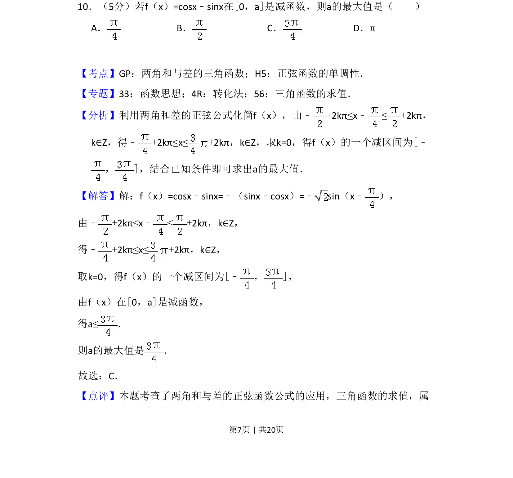
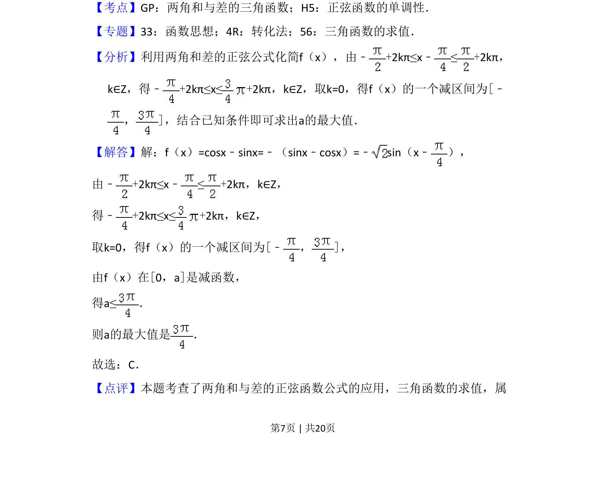
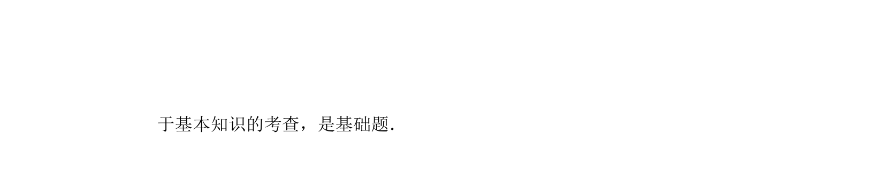

考点：两角和与差的三角函数 正弦函数的单调性 三角函数求值

本题考查利用两角和差公式化简三角函数，并结合正弦函数的单调性求参数的最大值。


📄 原 PDF 第 7 页：
素材/真题/吉林/2008-2024·（吉林）数学高考真题/2018年高考数学试卷（文）（新课标Ⅱ）（解析卷）.pdf
10．（5分）若f（x）=cosx﹣sinx在[0，a]是减函数，则a的最大值是（ ） A．B．C．D．π
【考点】GP：两角和与差的三角函数；H5：正弦函数的单调性．菁优网版权所有 【专题】33：函数思想；4R：转化法；56：三角函数的求值． 【分析】利用两角和差的正弦公式化简f（x），由﹣+2kπ≤x﹣≤+2kπ， k∈Z，得﹣+2kπ≤x≤+2kπ，k∈Z，取k=0，得f（x）的一个减区间为[﹣ ，]，结合已知条件即可求出a的最大值． 【解答】解：f（x）=cosx﹣sinx=﹣（sinx﹣cosx）=﹣sin（x﹣ ）， 由﹣+2kπ≤x﹣≤+2kπ，k∈Z， 得﹣+2kπ≤x≤+2kπ，k∈Z， 取k=0，得f（x）的一个减区间为[﹣ ，]， 由f（x）在[0，a]是减函数， 得a≤． 则a的最大值是 ． 故选：C． 【点评】本题考查了两角和与差的正弦函数公式的应用，三角函数的求值，属